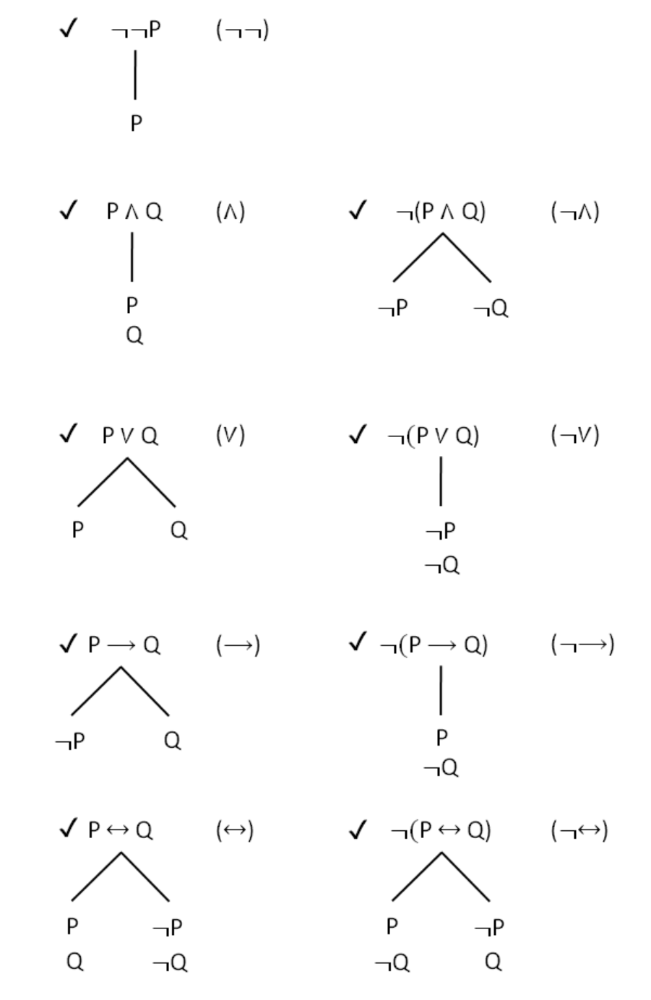
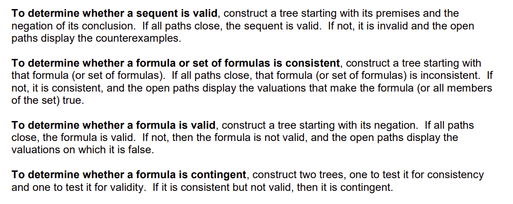
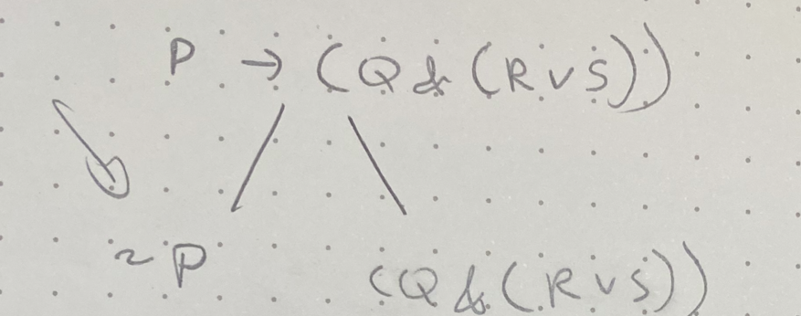
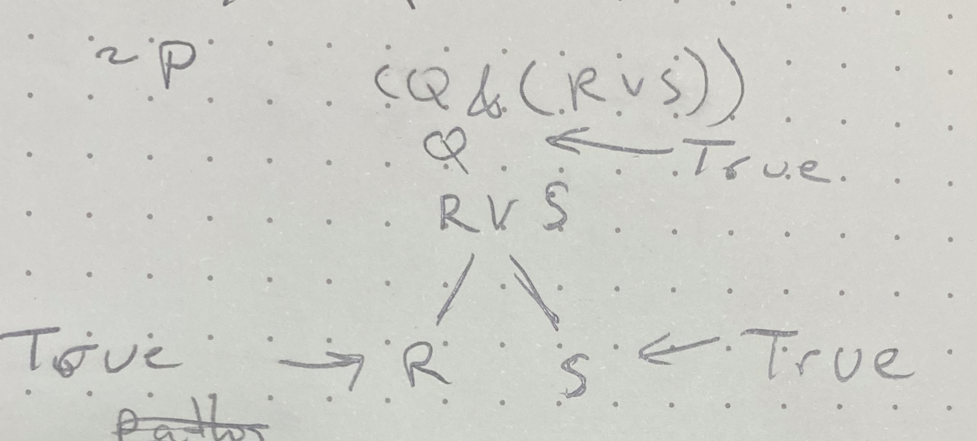

üóìÔ∏è Week 03
Introduction
PHIL104Q – Classical Propositional Logic, (Semantics)
Sep 02 2026
Classical Propositional Logic
Valuation Rules

Valuation Rules

Valuation Rules

negation
negated negation
conjunction
negated conjunction
disjunction
negated disjunction
conditional
negated conditional
biconditional
negated bi-conditional
What’s the point in all of this?
Consider the following proposition:
P \(\rightarrow\) (Q & (R \(\lor\) S))
If Jim stole the cookie, then Jim is guilty and either he deserves life in prison or he deserves death.
We have
A number of formulas that together form the proposition below. (Formula is a fancy way of saying ‘claim’)
Claim / Formula: P \(\rightarrow\) (Q & (R \(\lor\) S))
This claim / formula is made up of the following claims / formulas:
The claim that: ‘Jim stole the cookie’; ‘P’
The claim that: ‘Jim is guilty’; ‘Q’
The claim that: ‘Jim deserves life in prison’; ‘R’
The claim that: ‘Jim deserves death’; ‘S’
Any one of these can be true,
Or . . . they can all be true. What we ultimately want to know, is whether together, they make a true proposition, that if:
- Jim stole the cookie,
Then
- Jim is guilty,
and
He either
- deserves life in prison,
Or He Deserves Death
But there are many other claims as well . . .
- If Jim stole the cookie, then he is guilty.
This claim is an independent one.
Jim is guilty and deserves either life in prison, or death
He deserves life in prison or he deserves death
These are all independent claims
What we want to know, is whether any of them acts as a logical contradiction, or fail in some other way when combined with the others. Consider the two claims below:
‘The boy is tall’
‘The boy is not tall’
Some possible formulas
Together we have:
- ‘The boy is tall and the boy is not tall’
A contradiction
Or
- ‘The boy is tall or the boy is not tall’
Not a contradiction
Lets do some more
‘If the boy is tall, then the boy is not tall’
‘The boy is tall if and only if he is not tall’
‘It is not the case that the boy is tall’ (‘The boy is not tall’)
4 Semantic properties we can test for
Semantic Properties
Valid: The formula or sequent (argument), is true on all valuations. No counter examples (open paths)
Contingent: True on at least one, but not all valuations. (At least one open path, but not all)
Inconsistent: True on no valuations. All paths are closed.
Consistent: At least one valuation where all formulas are true. (Open paths show valuations that make the formula or set of formulas true)
| Type of Formula | Definition | Truth Tree Result |
|---|---|---|
| Valid Sequent | There are no counter examples | No Open Paths |
| Invalid Sequent | There is at least one valuation where the sequent is not true | At least one open path |
| Valid Formula | The formula is true on all its valuations (T under main operator) | All the paths are closed |
| Invalid | There is at least one valuation on which the formula is False | Open paths display valuations on which formula is false |
| Type of Formula | Definition | Truth Tree Result |
|---|---|---|
| Contingent | True on at least one, but not all valuations | At least one open path, but not all |
| Inconsistent | Not true on any valuations | All paths are closed |
| Consistent | At least one valuation where all formulas are true | Open paths show valuations that make the formula or set of formulas true |
This does not apply here. Here is why . . .
This is an argument
Jim is guilty and deserves life in prison or death
If Jim stole the cookie, then Jim is guilty and either he deserves life in prison or he deserves death.
Jim did steal the cookie.
Therefore, Jim is guilty and either he deserves life in prison or he deserves death.
P \(\rightarrow\) (Q & (R \(\lor\) S))
P
Therefore,
(Q & (R \(\lor\) S))
However, we are only looking at a formula, a single claim. Not an argument.
An argument has a premise
And an argument has a conclusion
Ours is a single claim
Second test
- Determine whether a formula (not an argument/sequent), is consistent.
Brief Foray into Consistency . . .

- In everyday language, consistency means reliable.
- An athlete who is consistent, is one who performs consistently well.
- An inconsistent athlete is one who performs well sometimes.
- In logic, a formula is consistent if it is logically possible for it to be true under all its formulations.
- It does not entail a logical contradiction.
- ‘The boy is tall’ and ‘the boy is short’ would entail a logical contradiction. (T & ~T)
In other words
Since we have a formula only, not an argument, we want to know three things.
Is it consistent?
Is it valid?
Is it contingent?
Consistency
Construct a truth tree starting with the formula. If all the paths close, then the formula is inconsistent.
Inconsistent Formula
Is it possible for . . .
The claim that: ‘Jim stole the cookie’; ‘P’
The claim that: ‘Jim is guilty’; ‘Q’
The claim that: ‘Jim deserves life in prison’; ‘R’
The claim that: ‘Jim deserves death’; ‘S’
To all be true at the same time?
This depends on the logical operators . . .
If Jim stole the cookie(?)
Then is he guilty?
And . . .(?)
Will our paths close like this?

First we start with the formula

Then look at the main operator . . .
P \(\rightarrow\) (Q & (R \(\lor\) S))
What does the valuation rule for ‘\(\rightarrow\)’ say?
This is what we are paying attention to . . .

In other words . . .
So step 1 . . .
Step 2 . . .

See all the open paths?
This means that
| ~ P | Q | R | S |
|---|---|---|---|
| T | T | T | T |
or
| P | Q | R | S |
|---|---|---|---|
| F | T | T | T |
Or . . .j
| ~P | \(\rightarrow\) | ( | Q | & | ( R | \(\lor\) | S ) | ) |
|---|---|---|---|---|---|---|---|---|
| T | T | T | T |
Therefore, the claim:
- If Jim stole the cookie then he is guilty and deserves life in prison or death
Is true if:
it is true that because Jim stole the cookie
that he deserves either
- life in prison
Or
Death
Inference
I was supposed to be sent away But they forgot to come and get me I was a functioning alcoholic ’Til nobody noticed my new aesthetic All of this to say I hope you’re okay But you’re the reason And no one here’s to blame But what about your quiet treason?
[Chorus: Taylor Swift] And for a fortnight there, we were forever Run into you sometimes, ask about the weather Now you’re in my backyard, turned into good neighbors Your wife waters flowers, I wanna kill her
[Verse 2: Taylor Swift, Taylor Swift & Post Malone, Post Malone] All my mornings are Mondays stuck in an endless February I took the miracle move-on drug, the effects were temporary And I love you, it’s ruining my life I love you, it’s ruining my life I touched you for only a fortnight I touched you, but I touched you
[Chorus: Taylor Swift, Taylor Swift & Post Malone] And for a fortnight there, we were forever Run into you sometimes, ask about the weather Now you’re in my backyard, turned into good neighbors Your wife waters flowers, I wanna kill her And for a fortnight there, we were together Run into you sometimes, comment on my sweater Now you’re at the mailbox, turned into good neighbors My husband is cheating, I wanna kill him
You might also like euphoria Kendrick Lamar meet the grahams Kendrick Lamar Houdini Eminem
[Bridge: Taylor Swift, Post Malone, Taylor Swift & Post Malone] I love you, it’s ruining my life I love you, it’s ruining my life I touched you for only a fortnight I touched you, I touched you I love you, it’s ruining my life I love you, it’s ruining my life I touched you for only a fortnight I touched you, I touched you
[Outro: Post Malone, Post Malone & Taylor Swift, Taylor Swift] Thought of callin’ ya, but you won’t pick up ’Nother fortnight lost in America Move to Florida, buy the car you want But it won’t start up ’til you touch, touch, touch me Thought of calling ya, but you won’t pick up ’Nother fortnight lost in America Move to Florida, buy the car you want But it won’t start up ’til I touch, touch, touch you
Let’s Imagine that this is an Argument
I was supposed to be sent away But they forgot to come and get me I was a functioning alcoholic ’Til nobody noticed my new aesthetic All of this to say I hope you’re okay But you’re the reason And no one here’s to blame But what about your quiet treason?
Maybe this will help
[Chorus: Taylor Swift]
And for a fortnight there, we were forever Run into you sometimes, ask about the weather Now you’re in my backyard, turned into good neighbors Your wife waters flowers, I wanna kill her
I was supposed to be sent away
But they forgot to come and get me
I was a functioning alcoholic
’Til nobody noticed my new aesthetic
All of this to say I hope you’re okay
But you’re the reason
And no one here’s to blame
But what about your quiet treason?

PHIL104Q – Introduction to Logic